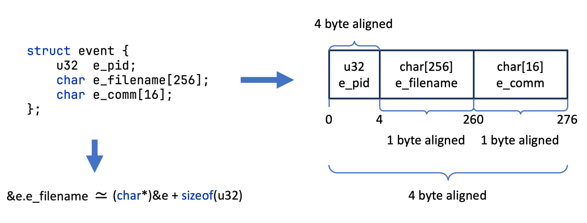

Annotations Catalog¶
Blog series: Part 7 — Auto-layouting structs · Part 12 — Write eBPF in pure Java

All hello-ebpf annotations fall into five buckets:
- Program shape — annotations that declare BPF programs, probe types, maps, and timers.
- Type system — annotations that control how Java types map to C structs, unions, enums, and arrays.
- Pointer qualifiers — annotations that describe memory provenance (arena, kernel, user, nullable, kptr).
- Build and load — annotations that affect compilation, feature-gating, and map sharing at load time.
- Plugin-internal — annotations consumed only by the annotation processor or compiler plugin; not intended for user code.
Program shape¶
@BPF¶
Triggers annotation-processor compilation of a BPFProgram subclass. Place on an abstract class that
extends BPFProgram. The processor generates a concrete *Impl class, compiles the embedded C program,
and wires up Java-side map and program accessors.
@BPF(license = "GPL")
public abstract class HelloWorld extends BPFProgram {
static final String EBPF_PROGRAM = """ ... """;
}
Attributes:
license— BPF license string (e.g."GPL"). When empty the processor emits aSEC("license")variable instead.includeTypes— additional@Type-annotated classes to include in the generated C source.includes— default headers (vmlinux.h,bpf_helpers.h, etc.); override only when you need a completely custom set.
@BPFFunction¶
Marks a method as a BPF C function. Controls the C section, header template, last statement, and inlining.
Apply to methods inside a @BPF class or a @BPFInterface/@StructOps interface.
@BPFFunction(
headerTemplate = "int BPF_PROG($name, int dfd, struct filename *name)",
lastStatement = "return 0;",
section = "fentry/do_unlinkat"
)
public default void enterUnlinkat(int dfd, Ptr<filename> name) {
throw new MethodIsBPFRelatedFunction();
}
Key attributes:
section— emitsSEC("..."). When absent the method is treated as a helper (inlined by default).headerTemplate— overrides the generated C function header; supports$name,$return,$params,$paramN,$paramTypeN.lastStatement— appended as the final C statement of the function body.callTemplate— controls how call sites in C are rendered (default:$name).inline— defaults totruefor helpers,falsefor entry-point programs (with a section).autoAttach— include this program whenBPFProgram.autoAttachPrograms()is called.name— override the C function name (default: method name).
@BPFInline / @AlwaysInline¶
Force __always_inline on the generated C function. Both annotations are equivalent; @BPFInline is in the
bpf package. Apply to any method that is called from other BPF functions and must not generate a separate
function frame.
@AlwaysInline is in me.bechberger.ebpf.annotations; prefer @BPFInline when importing from the bpf
annotation package.
@Kprobe¶
Attaches the method as a kprobe on the named kernel function entry. Equivalent to
@BPFFunction(section = "kprobe/<symbol>", autoAttach = true).
@Kretprobe¶
Attaches the method as a kretprobe on the named kernel function return. Equivalent to
@BPFFunction(section = "kretprobe/<symbol>", autoAttach = true).
@Ksyscall¶
Attaches the method as an architecture-portable ksyscall probe. Equivalent to
@BPFFunction(section = "ksyscall/<syscall>", autoAttach = true). The syscall name must omit the
architecture prefix (e.g. "openat", not "__x64_sys_openat").
@Fentry¶
BTF-based function entry probe, auto-attached. Requires BTF kernel support (kernel ≥ 5.5).
Equivalent to @BPFFunction(section = "fentry/<symbol>", autoAttach = true).
@Fexit¶
BTF-based function return probe, auto-attached. Requires BTF kernel support.
Equivalent to @BPFFunction(section = "fexit/<symbol>", autoAttach = true).
@Tracepoint¶
Typed tracepoint, auto-attached by category and name. The method parameter list must match the tracepoint's format fields.
@Tracepoint(category = "syscalls", name = "sys_enter_openat")
int onOpenAt(Ptr<OpenAtCtx> ctx) { return 0; }
@RawTracepoint¶
Raw (untyped) tracepoint, auto-attached by name. The header macro BPF_PROG is applied automatically.
@RawTracepoint("sys_enter")
void onSyscallEnter(Ptr<PtDefinitions.pt_regs> regs, @Unsigned long nr) {}
@LSM¶
Linux Security Module BPF hook, auto-attached. Return 0 to allow; return a negative errno
(e.g. -EACCES) to deny. Requires CONFIG_BPF_LSM=y and lsm=...,bpf on the kernel command line.
Common hooks: file_open, bpf, socket_create, task_fix_setuid, inode_rename, inode_unlink.
See also: LSM guide
@Uprobe¶
User-space probe, auto-attached. Specify path to the binary or shared library and either symbol or offset.
@Uprobe(path = "/usr/lib/libc.so.6", symbol = "malloc")
int traceMalloc(Ptr<PtDefinitions.pt_regs> ctx) { return 0; }
See also: uprobes guide
@Uretprobe¶
User-space return probe, auto-attached. Same attributes as @Uprobe.
@Uretprobe(path = "/usr/lib/libc.so.6", symbol = "malloc")
int traceMallocRet(Ptr<PtDefinitions.pt_regs> ctx) { return 0; }
@KProbeMulti¶
Emits SEC("kprobe.multi/<glob>"). Attach is manual: call
BPFProgram.attachKProbeMulti(prog, symbols, cookies, retprobe) at runtime with the resolved symbol list.
Set retprobe = true to emit kretprobe.multi. Requires kernel ≥ 5.18.
@UProbeMulti¶
Emits SEC("uprobe.multi/<glob>"). Attach is manual: call
BPFProgram.attachUprobeMulti(prog, binaryPath, funcs, cookies, retprobe) at runtime.
Set retprobe = true to emit uretprobe.multi. Requires kernel ≥ 6.6.
@BPFMapDefinition¶
Declares a BPF map field. Apply as a type-use annotation on a non-private, non-final instance field of
a @BPFMapClass type. maxEntries is mandatory; for ring buffers it is the byte size (must be a
multiple of the page size).
@BPFMapClass¶
Declares a Java class as a BPF map type. Apply to a class that wraps a specific map kind.
cTemplate and javaTemplate use $field, $maxEntries, $c1/$c2 (C type names),
$b1/$b2 (BPFType references), and $fd (Java FileDescriptor creation code).
Intended for library authors defining new map types, not for end users.
@BPFTailCallTable¶
Marks a BPFProgArray field as an enum-driven tail-call dispatch table. The enum's ordinals become
the slot indices. Pair with @BPFMapDefinition whose maxEntries equals the enum constant count.
enum Slot { PARSE_ETH, PARSE_IP }
@BPFTailCallTable(slots = Slot.class)
@BPFMapDefinition(maxEntries = 2)
BPFProgArray dispatch;
See also: tail-calls guide
@TailCallSlot¶
Marks a @BPFFunction method as the implementation of a specific slot in a @BPFTailCallTable.
value() must be the exact name of a constant of the table's enum. Use table() to disambiguate
when the class has more than one table.
@BPFTimer¶
Marks a @BPFFunction method as a BPF timer callback. The method signature must match the BPF timer
callback convention (map pointer, key pointer, value pointer). Register with bpf_timer_set_callback
and start with bpf_timer_start.
@BPFTimer
@BPFFunction
static int onTimer(Ptr<?> map, Ptr<Integer> key, Ptr<TimerEntry> val) { return 0; }
See also: timers guide
@StructOps¶
Marks an interface as the Java mirror of a kernel bpf_struct_ops table. When a @BPF class
implements the interface, the compiler plugin emits one BPF program per overridden method plus a
SEC(".struct_ops.link") struct instance.
@StructOps("tcp_congestion_ops")
public interface TcpCongestionControl {
default int ssthresh(Ptr<sock> sk) { return 4; }
}
Key attributes:
value— kernel BTF type name (e.g."sched_ext_ops","tcp_congestion_ops").instanceName— override the C-side struct instance variable name (default: implementing class name).emittedNamePrefix— prefix prepended to each emitted BPF function name.sectionPrefix— section prefix for each callback (default:"struct_ops/").
See also: struct-ops guide
@Property / @Properties¶
Sets the value of a named C-code property defined by @PropertyDefinition. Apply to a @BPF class.
@Properties is the repeatable container.
@BPF(license = "GPL")
@Property(name = "sched_name", value = "my_scheduler")
public abstract class MyScheduler extends BPFProgram implements Scheduler {}
@PropertyDefinition / @PropertyDefinitions¶
Declares a named placeholder substituted into generated C code as ${name}. Apply to a
@BPFInterface or @StructOps interface. @PropertyDefinitions is the repeatable container.
@PropertyDefinition(name = "sched_name", defaultValue = "scheduler")
public interface Scheduler { ... }
The regexp attribute validates the value supplied via @Property.
Type system¶
@Type¶
Generates a BPF C struct, union, or typedef for the annotated record or class. Apply to a record,
a class extending Struct or Union, or an enum implementing Enum<T>.
Attributes:
name— override the generated C type name.typedefed— emit atypedef struct ...definition.cType— use an explicit C type expression (supports$T1,$T2template params).noCCodeGeneration— suppress C emission (type is already defined elsewhere).
@Unsigned¶
Marks an integer field or local variable as unsigned in the generated C code.
Apply as a type-use annotation on int, long, short, or byte fields.
@Size / @Sizes¶
Specifies the array length for a fixed-size array field or a fixed-length String (C char[]).
@Sizes is the implicit repeatable container used for multi-dimensional arrays.
@BoundedBy¶
Declares a static upper bound on the iteration count of the loop that uses the annotated variable as its index. The compiler plugin rewrites the loop into a verifier-friendly form with a constant bound plus a runtime break.
N must be a compile-time constant.
@EnumMember¶
Specifies an explicit numeric value and/or C name for a BPF enum constant. Apply to enum fields inside
a @Type-annotated enum.
@InlineUnion¶
Groups consecutive struct fields into an anonymous inline union. All fields sharing the same integer
value() are placed in the same anonymous union block in the generated C struct.
@Type
class Address extends Struct {
@InlineUnion(1) @Unsigned int ipv4;
@InlineUnion(1) @Size(16) byte[] ipv6;
}
@Offset¶
Declares an explicit byte offset (from the start of the struct) for a struct field. Used when the field must be placed at a fixed position that differs from the natural layout.
@OriginalName / @OriginalNames¶
Records the original C name for a type used under a different Java alias. The compiler plugin uses
this to emit the correct C type name in generated code. @OriginalNames is the repeatable container.
Apply as a type-use annotation where the Java name differs from the kernel C name.
@PassByRef¶
Suppresses the automatic TAKE_ADDRESS / DEREFERENCE insertion that PtrCoercionInference applies
at parameter sites. Apply to a parameter when the caller must pass the literal value rather than an
auto-inserted & or *.
@CustomType¶
Marks a non-record class as a user-defined BPF type with a hand-specified BPFType instance and
hand-written C code. Use when the automatic @Type processor cannot produce the required layout.
@CustomType(
isStruct = true,
specFieldName = "$outerClass.INT_PAIR",
cCode = "struct $name { int x; int y; };",
constructorTemplate = "((struct IntPair){$arg1, $arg2})"
)
record IntPair(int x, int y) {}
Pointer qualifiers¶
@InArena¶
Marks a pointer as living in a BPF arena address space (clang AS1, __arena). The compiler plugin
emits the __arena type qualifier so clang selects the correct load/store path. Apply to fields,
local variables, parameters, or as a type-use qualifier on Ptr<T>.
See also: BPF Arenas
@Kptr¶
Marks a struct field as a BPF kernel pointer (__kptr). The verifier tracks ownership and
reference-counting for __kptr fields; exchange the pointer in/out via bpf_kptr_xchg.
Lowered to:
Apply only to struct fields. The pointed-to type must be a kernel object that supports kptr.
@TrustedPtr¶
Marks a kfunc parameter as requiring a trusted pointer. When present on a parameter, Ptr.directVal()
may appear in the argument expression without triggering the plugin's structural check.
@BPFNullable¶
Marks a method return value as potentially null (e.g. a map lookup that may miss). The compiler
plugin enforces a null guard before any dereference of the result. Meaningful only on
@BuiltinBPFFunction or @BPFFunctionAlternative methods.
@BuiltinBPFFunction("bpf_map_lookup_elem($arg1, $arg2)")
@BPFNullable
static native <K, V> Ptr<V> lookupElem(BPFHashMap<K, V> map, Ptr<K> key);
@BPFKernelMemory¶
Marks a pointer parameter or local variable as originating from kernel space. The compiler plugin
emits bpf_probe_read_kernel when dereferencing pointers that the verifier does not track directly.
@BPFUserMemory¶
Marks a pointer parameter or local variable as originating from user space. The compiler plugin
emits bpf_probe_read_user on dereference.
@AllowDirectVal¶
Escape hatch that silences the plugin's structural check requiring Ptr.directVal() to be immediately
followed by a field access. Apply to a local variable declaration or the enclosing @BPFFunction method.
Build and load¶
@Includes¶
Adds extra #include directives to the generated BPF C program. Apply to a @BPF class or to an
interface the class implements.
@BPF
@Includes({"linux/if_ether.h", "linux/ip.h"})
public abstract class PacketFilter extends BPFProgram { ... }
Each string becomes #include <...> in the generated C source.
@BuiltinBPFFunction¶
Marks a method as a pre-existing BPF helper or C function. The method body throws
MethodIsBPFRelatedFunction; the annotation provides a call template that the compiler plugin
substitutes at every call site.
@BuiltinBPFFunction("bpf_trace_printk($str$arg1, $strlen$arg1, $args2_)")
static void tracePrintk(String fmt, Object... args) {
throw new MethodIsBPFRelatedFunction();
}
The carrier attribute names the C expression that becomes $this at subsequent call sites
(used with @BPFAbstraction).
See also: helpers guide
@KFunc¶
Marks a @BuiltinBPFFunction stub as a kernel BPF kfunc. The compiler plugin emits a __ksym
forward declaration in the BPF program prologue for every reachable @KFunc-annotated method.
@BuiltinBPFFunction("bpf_cpumask_create()")
@KFunc(signature = "struct bpf_cpumask *bpf_cpumask_create(void)")
static native Ptr<bpf_cpumask> bpfCpumaskCreate();
Normally generated by bpf-gen. Hand-apply only for kfuncs the generator did not pick up.
@KernelBTF¶
Marks a generated Java class as mirroring a kernel BTF type. The compiler plugin switches field
accesses on annotated types from receiver->field to BPF_CORE_READ(receiver, field) for
CO-RE relocation at load time.
Applied automatically by bpf-gen. Do not apply to user-written @Type records.
@Requires¶
Guards program loading on required kernel features. If a feature is absent the program is neither loaded nor compiled.
@BPF(license = "GPL")
@Requires(sched_ext = true)
public abstract class MyScheduler extends BPFProgram implements Scheduler { ... }
Currently supported: sched_ext (sched-ext kernel support).
@SharedFrom¶
Imports a pinned BPF map from another (@BPF) program class. Both programs share the same kernel map
object. Apply alongside @BPFMapDefinition on the consumer field.
Pass the producer instance to BPFProgram.load(ConsumerClass.class, producer) at load time.
See also: shared-maps guide
@InnerMap¶
Marks a map-of-maps field with the name of a sibling @BPFMapDefinition field to use as the
inner-map template. libbpf resolves the inner-map fd automatically during load.
@BPFMapDefinition(maxEntries = 1)
BPFHashMap<Long, Long> innerTemplate;
@InnerMap("innerTemplate")
@BPFMapDefinition(maxEntries = 256)
BPFHashOfMaps<Integer, BPFHashMap<Long, Long>> outer;
See also: map-of-maps guide
@Sleepable¶
On a @StructOps method override, emits SEC("struct_ops.s/<name>") (sleepable variant) instead of
SEC("struct_ops/<name>"). Apply to the overriding method in the @BPF class.
As of kernel 6.14, sched-ext's init is the canonical sleepable slot.
Plugin-internal (contributor reference)¶
The following annotations are consumed exclusively by the annotation processor or compiler plugin. They appear in generated code and in library infrastructure; user application code should not apply them directly.
| Annotation | Package | Purpose |
|---|---|---|
@BPFAbstraction |
bpf |
Marks a class as a compile-time BPF C abstraction with no runtime representation; provides carrier-expression inlining. |
@BPFFunctionAlternative |
bpf |
Points to a BPF-callable alternative for a Java-only method. |
@BPFImpl |
bpf |
Marks annotation-processor-generated *Impl class for a @BPF program. |
@BPFInterface |
bpf |
Marks an interface as a BPF mixin processed by the annotation processor; supplies before/after C code blocks. |
@BPFJavaInline |
bpf |
Inlines a Java method body at every BPF call site via GNU statement expressions; used inside @BPFAbstraction classes. |
@InternalBody |
bpf |
Stores generated C body for interface-implemented methods; written by the processor, not by users. |
@InternalMethodDefinition |
bpf |
Stores generated method definition for interface methods; written by the processor. |
@JavaOnly |
bpf |
Prevents a static final field from being emitted as a C #define. |
@NotUsableInJava |
bpf |
Marks BPF-only elements that must not be called from Java; triggers a compile error on Java-side calls. |
@SuppressBPFWarning |
me.bechberger.ebpf.annotations |
Silences plugin diagnostics by category (e.g. "region.mixing", "null.maybe", "all") in the annotated scope. |